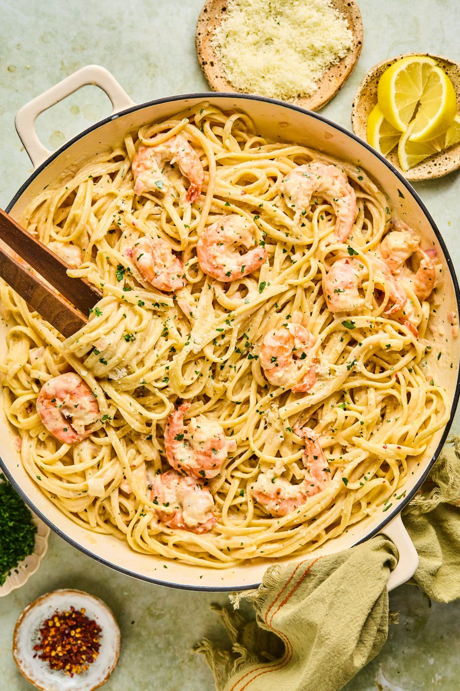

Shrimp Scampi
Home

What is Shrimp Scampi?
Shrimp scampi is a seafood dish made of shrimp cooked in a butter, garlic, and white wine sauce. This recipe can be made in many ways. Everyone has a different version, but scampi usually includes these three ingredients. You can serve shrimp scampi by itself as an appetizer or over pasta as a main dish.
ingredients
- Shrimp: Choose large shrimp (31 to 35 shrimp per pound) to get best results for this recipe. You can buy fresh shrimp and peel and devein it yourself, or buy frozen shrimp. Thaw frozen shrimp before using.
- Pasta: This recipe uses a 16-ounce package of linguine, but you can substitute the pasta of your choice, like angel hair pasta, fettuccine, or spaghetti.
- Butter: Use unsalted butter. You can add salt to taste later in the recipe.
- Extra-virgin olive oil: The flavor of the olive oil comes through in this recipe, so use the best quality.
- Shallots and garlic: These aromatics add flavor and fragrance to shrimp scampi.
- White wine: Use a dry, crisp white wine for shrimp scampi sauce. Pinot grigio or sauvignon blanc are good choices, and you can drink the leftover wine with dinner. If you don't have a bottle to use, chicken stock or white whine vinegar make great substitutes.
- Lemon Juice: Use freshly squeezed lemon juice for the best flavor.
- Seasonings: Kosher salt and freshly ground black pepper amplify the flavors, and a pinch of dried red pepper flakes give shrimp scampi a subtle kick. Use more red pepper flakes if you like things a bit more spicy.
- Parsley: Fresh parsley adds eye-catching color and a bright, peppery flavor.